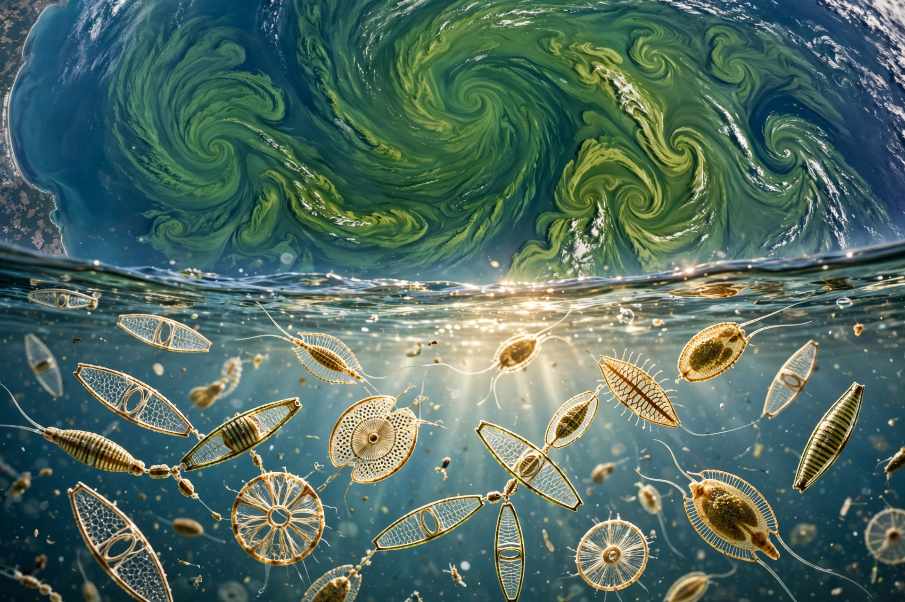

Phytoplankton (from Greek phyton, "plant," and planktos, "wanderer") are microscopic photosynthetic organisms that live in the sunlit upper layers of oceans and freshwater bodies. They form the base of nearly all aquatic food webs and, through photosynthesis, produce a large share — often estimated around half — of Earth's oxygen.

| Major groups | Diatoms, dinoflagellates, coccolithophores, cyanobacteria |
|---|---|
| Habitat | Photic zone of oceans, seas, and lakes |
| Role | Primary production; carbon fixation; oxygen production |
The principal phytoplankton groups include diatoms, encased in silica shells (frustules); dinoflagellates, many with two flagella; coccolithophores, covered in calcite plates; and photosynthetic cyanobacteria such as Prochlorococcus, the most abundant photosynthetic organism on Earth. Sizes range from under a micrometre to colonies visible to the naked eye.
Phytoplankton growth depends on sunlight and nutrients — nitrogen, phosphorus, silica, and iron. Wind-driven upwelling and seasonal mixing replenish surface nutrients, producing spring blooms visible from satellites. Grazing zooplankton transfer phytoplankton production to fish and whales; sinking dead cells carry carbon to the deep ocean in the "biological pump," sequestering it for centuries. Blooms of certain dinoflagellates and diatoms can be harmful, producing toxins and red tides.
Ocean warming and stratification are expected to reduce nutrient supply in many regions and shift phytoplankton communities, with consequences for fisheries and carbon uptake. Coccolithophore calcification also interacts with ocean acidification. Satellite ocean-color sensors such as MODIS and SeaWiFS track global phytoplankton biomass and productivity.
See also: Plankton · Diatom · Peruvian anchoveta · Algal bloom